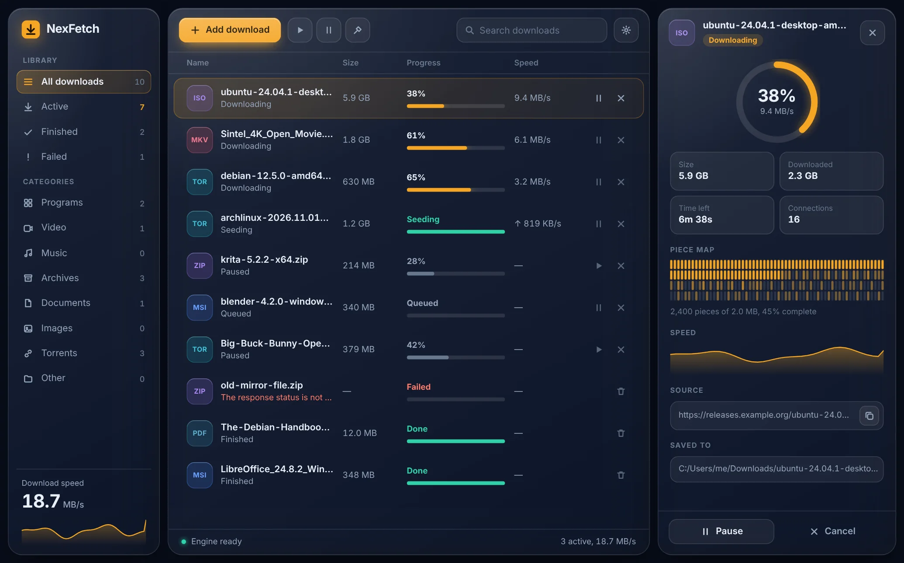
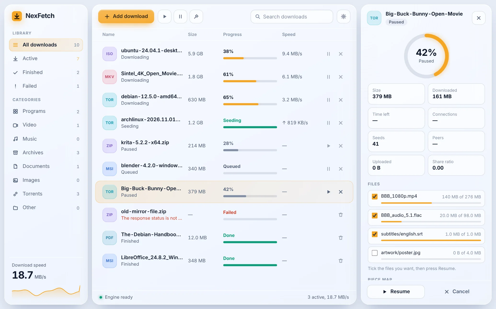
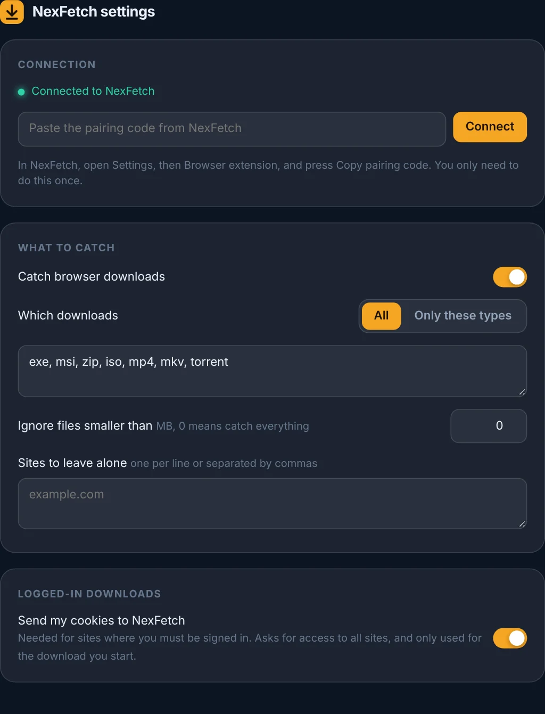
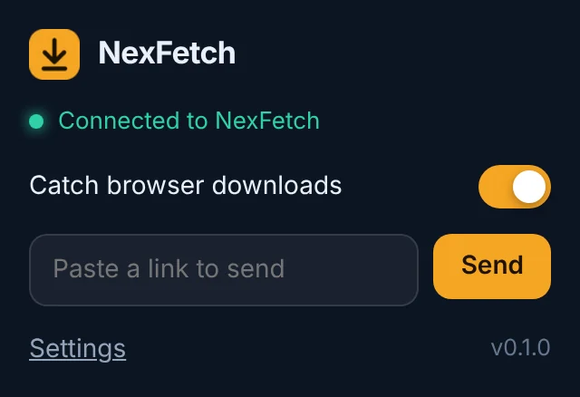
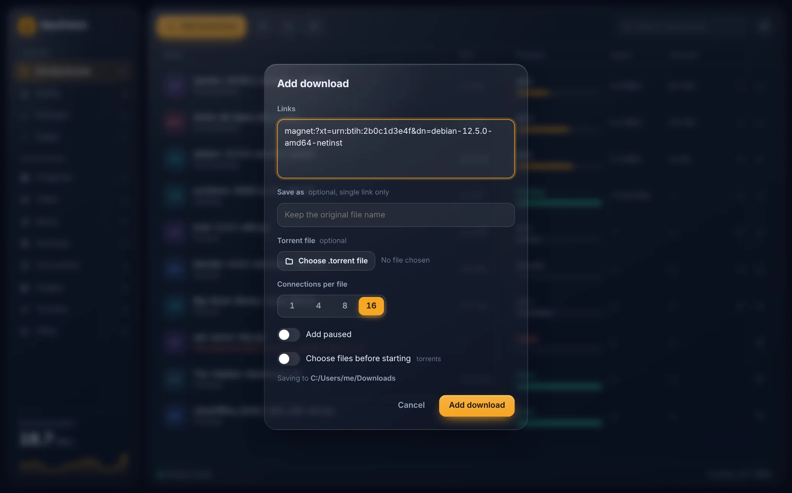
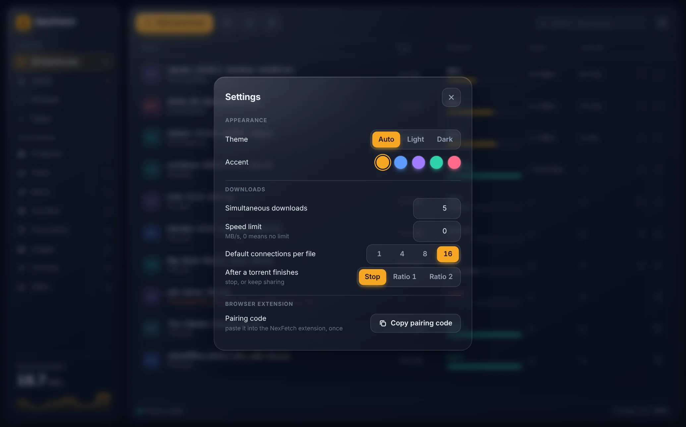

Fast downloads. No ads. Fully open source.
NexFetch is a free download manager for Windows. It splits every file into up to 16 connections, handles torrents and magnet links, and picks up downloads from Chrome, Edge, Brave, Opera and Firefox.
Free for good. Windows 10 and 11, 64-bit. Licensed under GPL-3.0.
-
ISO
ubuntu-24.04.1-desktop-amd64.iso
-
MKV
Sintel_4K_Open_Movie.mkv
-
TOR
debian-12.5.0-amd64-netinst
-
ZIP
krita-5.2.2-x64.zip
A live preview. Try pausing a download.
Every file, in parts
NexFetch opens up to 16 connections to the server and downloads different pieces at the same time, so big files like ISOs and installers finish sooner. If your connection drops, it picks up where it stopped.
Click any download to see a progress ring, speed over time and a piece map that shows exactly which parts are done. Sort by name, size or progress, search the list, and filter by type.

Torrents and magnet links
Paste a magnet link or open a .torrent file. For torrents with many files, choose the ones you want before the download starts. See seeds, peers, upload and share ratio at a glance.
Seeding is off by default, so your upload bandwidth is yours. Turn it on with a share ratio when you want to give back. Set NexFetch as your magnet app in Windows and a click on any magnet link opens it.

It catches downloads from your browser
Install the NexFetch extension and downloads you start in Chrome, Edge, Brave, Opera or Firefox go straight to NexFetch. Right-click any link, video or audio and choose Download with NexFetch.
For sites where you have to be signed in, turn on cookie sharing and those downloads work too. Choose which file types to catch, ignore small files, and skip sites you don’t want handled.
- In NexFetch, open Settings and press Copy pairing code.
- Click the NexFetch icon in your browser, open its settings and paste the code.
- Download something. It shows up in NexFetch.
If NexFetch isn’t running, the browser keeps the download, so nothing is ever lost. The extension talks only to your own PC and needs the pairing code.


And the details that make it comfortable
Glass look, your colors
Light, dark or automatic, with five accent colors. Smooth animations that switch off when your system asks for less motion.
Categories and search
Programs, video, music, archives, documents, images and torrents are sorted for you. Find anything with the search box.
You set the limits
Choose how many downloads run at once, cap the speed, and pick how many connections each file uses.
Add links the easy way
Copy a link and press Ctrl+V in the window. Paste a whole list of links at once, or give the file a name of your own.
Keyboard friendly
Ctrl+N adds a download, Ctrl+F searches, arrow keys move through the list, and Esc closes whatever is open.
No ads, no tracking
NexFetch has no ads, no accounts and no analytics. The only network traffic is the downloads you start.


Install in a minute
Download the installer
Get the file ending in -setup.exe from the latest release on GitHub.
Run it
Windows may show “Windows protected your PC”. Click More info, then Run anyway. NexFetch is open source but not yet code-signed, and signing certificates cost money. Each release lists a SHA-256 checksum so you can check the file is the one we published.
Optional: make it your magnet app
Open Windows Settings, Apps, Default apps, search for magnet and choose NexFetch. Do the same for .torrent files.
Requires Windows 10 or 11, 64-bit. If Windows’ Smart App Control is on, it blocks every unsigned app. Turn it off in Windows Security, App and browser control, to run NexFetch.
Get the latest releaseFree software, built on free software
NexFetch is licensed under the GNU GPL v3. You can read the code, change it and share it, as long as your version stays open too. That’s how we make sure there are never ads or hidden tracking added by anyone along the way.
It stands on two great open-source projects:
- aria2 is the download engine that does the heavy lifting: multi-connection downloads, resuming and BitTorrent. Licensed GPL-2.0-or-later.
- Tauri turns web technology into a small, fast native Windows app. Licensed MIT or Apache-2.0.
NexFetch is an independent project and is not affiliated with or endorsed by aria2 or Tauri.


What we’re working on
No dates and no promises. This is the list we’re working through.
- Scheduler and download queues
- Video downloads from streaming pages (HLS and DASH)
- A code-signed installer and automatic updates
- macOS and Linux builds
- A button to open a finished file or its folder
Questions people ask
Is NexFetch really free?
Yes. It is free to use and always will be. There are no paid tiers, no ads and no accounts.
Is it safe?
The full source code is public, so anyone can check what it does. The installer is not code-signed yet, which is why Windows asks you to confirm. Only download it from the official GitHub releases page.
Does it send any data about me?
No. NexFetch has no analytics or telemetry. The only connections are the downloads you start. The browser extension talks only to NexFetch on your own computer.
Why is it built on aria2?
aria2 has been proven for more than fifteen years and handles resuming, multiple connections and BitTorrent very well. NexFetch adds the interface, the browser extension and the torrent file picker on top of it.
Does it work on macOS or Linux?
Not yet. The first release is for Windows 10 and 11. Mac and Linux builds are on the list.
Can it download videos from YouTube and similar sites?
Not at the moment. NexFetch downloads files from direct links, torrents and magnet links. Please respect the terms of the sites you use.
Are torrents legal?
BitTorrent is a normal technology that Linux distributions, game studios and open movies use to share big files. Only download and share what you have the right to.
Why did the browser extension say NexFetch isn’t running?
The extension needs the NexFetch app to be open. If it isn’t, your browser keeps the download. Start NexFetch and try again.
Help and support
Quick fixes
- “Engine not running”: close NexFetch fully and open it again. If it keeps happening, reinstall.
- Windows blocks the installer: click More info, then Run anyway. If there is no such button, Smart App Control is on and has to be turned off.
- Magnet links open another app: in Windows Settings, Apps, Default apps, set NexFetch for magnet.
- Extension can’t connect: make sure NexFetch is open, then copy a fresh pairing code from its Settings.
- A download fails with 403: the site wants you signed in. Install the extension and turn on cookie sharing.
Report a problem
Open an issue on GitHub and tell us your Windows version, the NexFetch version, what you did and what happened. A screenshot helps a lot.
Open an issueAsk a question or suggest something
Browse the existing issues first, because your idea might already be there. Add a thumbs-up or a comment to help it along.
See all issuesWays to help
- Star the project on GitHub so more people find it.
- Tell a friend who still puts up with ads in their download manager.
- Report bugs, even small ones.
- Send a pull request. The code is plain HTML, CSS, JavaScript and a little Rust.